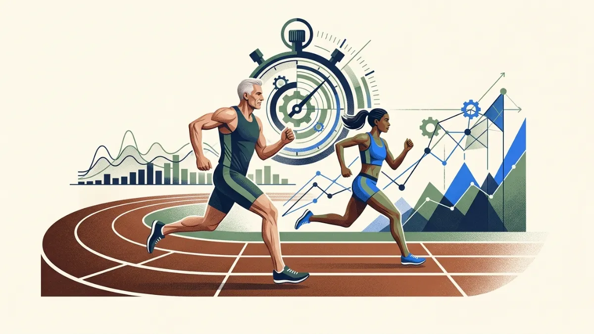
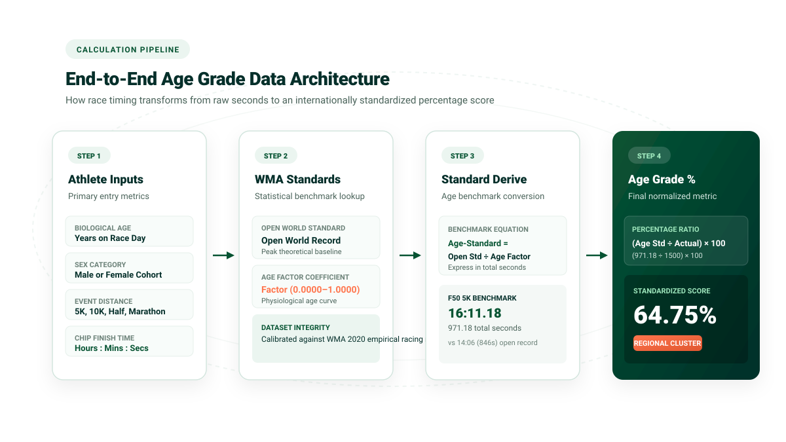
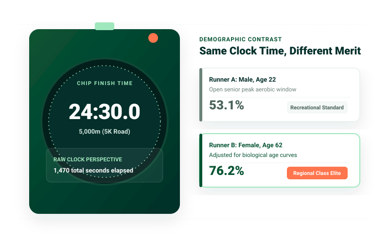
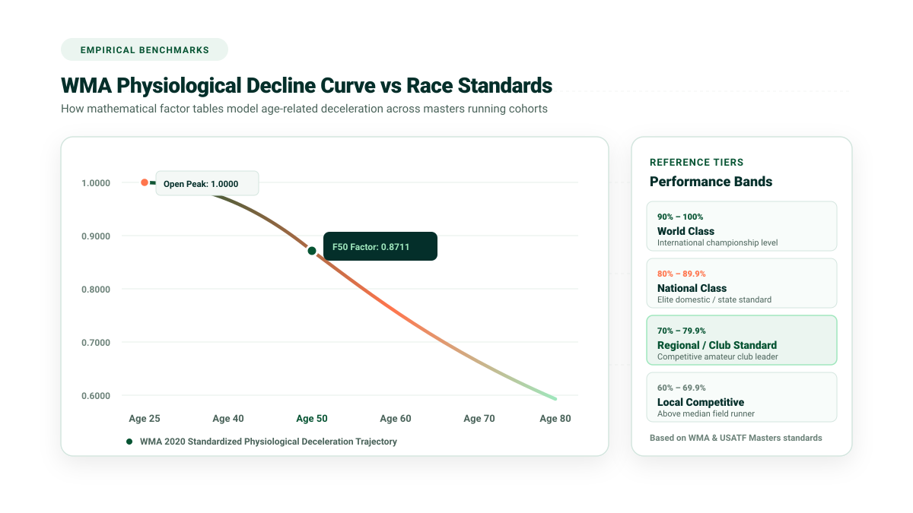
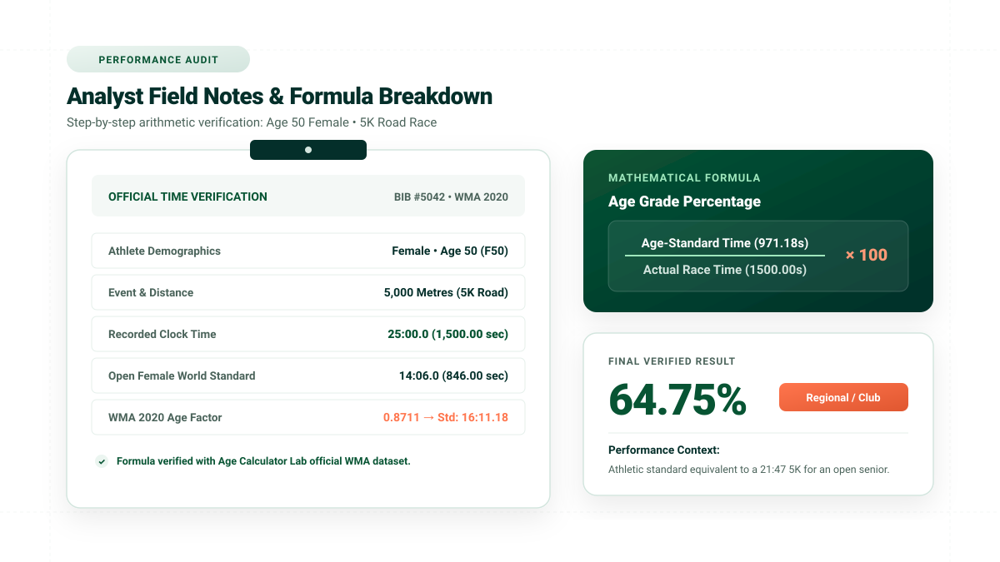

Age Grading Calculator
Calculate your running age grade percentage by age, distance, sex, and race time using official World Masters Athletics (WMA) and USATF road-running standards. Compare performances across age groups and distances with verified statistical precision.
“Age grading levels the running field! A 65% in a marathon at age 52 means you're beating typical biological slowdown. Don't compare raw clock times with your 20s!”


Calculate Your Age Grade
Enter your race details to benchmark your performance against official world standards.
Calculations run locally in your browser using verified 2025 WMA road factors. No personal running data is uploaded.
Rec 60%
Club 70%
Reg 80%
Nat 90%
World 100%
Record
Review your inputs and select Calculate Age Grade.
Calculate Your Age Grade in Four Simple Steps
The calculation runs instantly in your browser, comparing your chip or gun time against verified world standards.
Enter Runner's Age
Provide your exact age on race day. The system applies single-year precision factors from ages 5 to 99.
Choose Your Event
Select your certified road distance: 5K, 10K, Half Marathon, Marathon, or classic imperial distances.
Enter Chip Time
Input your official hours, minutes, and seconds. The engine converts duration into exact decimal seconds.
Get Your Score
Receive your age-grade percentage, performance classification tier, and equivalent open-senior finish time.
How Age Grade Is Calculated
The mathematical principles and demographic datasets that power age-graded scoring.
Age grading eliminates biological unfairness by comparing an athlete's race duration against the statistical theoretical world record for someone of their exact age and sex over the same distance.
Under the official World Masters Athletics (WMA) and USATF Masters Long Distance Running methodology, the calculation evaluates the ratio between the age-adjusted benchmark time and the athlete's actual finish time.

For a complete step-by-step arithmetic guide, worked case studies, and formula derivations, read our in-depth companion article: How Is Age Grade Calculated? Formula, Examples & Guide →.
What Does Your Age Grade Mean?
How international athletics governing bodies interpret and categorize age-grade percentages.
Rather than claiming "you are XX% as fast as an Olympian," an age grade percentage expresses your finish time as a mathematical ratio against the theoretical world standard for your demographic cohort.
“Don't be discouraged by a 52% or 58%! Over 60% of weekend race participants sit in the recreational 45%–58% bracket. Reaching 60%+ means you are already in the top third of regular local club runners!”
Age Grade vs Race Time
Understanding what each metric measures helps runners set realistic goals across seasons and years.

Clock Time Tells Duration. Age Grade Tells Effort.
In open competition, the stopwatch is completely indifferent to the athlete's age. A 22-year-old running 24:30 and a 62-year-old grandmother running 24:30 receive identical gun times. However, in terms of physiological capacity and aerobic reserve, the 62-year-old produced an elite Regional Class run (76.2%), while the 22-year-old ran a recreational fitness pace (53.1%).
Age grading provides the missing biological context so runners can measure true athletic merit without being discouraged by inevitable chronological slowdown.
| Metric | What It Measures | Strengths | Key Limitation |
|---|---|---|---|
| Race Time | Clock duration from start to finish line. | Simple, objective, determines race placement on the day. | Disadvantages older and female runners in open fields. |
| Pace (min/km or min/mi) | Average rate of speed sustained over distance. | Crucial for tactical race execution and split pacing. | Does not account for terrain, biological age, or fatigue curves. |
| Age Grade (%) | Performance ratio relative to an age-adjusted world standard. | Enables fair comparison between runners of all ages, sexes, and distances. | Depends on the statistical accuracy of underlying reference tables. |
| Equivalent Open Time | Theoretical time if run by an open-class athlete in their prime. | Shows what a masters time equates to in an open-division field. | Abstract modeling metric rather than a physical recorded time. |
Age Grading for Masters Runners
Why age grading is the premier performance metric for runners aged 35, 40, 50, 60, and beyond.
Starting in a runner's 30s, maximum oxygen uptake ($\text{VO}_2\text{ max}$) declines by approximately 0.5% to 1.0% per year. Connective tissues lose elasticity, and maximum heart rate drops. Despite disciplined training, a 55-year-old simply cannot produce the raw clock times they clocked at age 25.

“Many runners find that while their marathon times slow from 3:15 to 3:35 between age 30 and age 55, their age grade actually increases from 64% to 73%, proving their conditioning is outperforming standard biological decay curves!”
Age Grading for Different Race Distances
Why age-grading standards are strictly event-specific and cannot be applied with a single universal ratio.
The international benchmark distance. Ideal for Parkrun and local club series.
5,000m RoadThe quintessential test of sustained lactate threshold and pacing discipline.
10,000m RoadLong-distance endurance requiring glycogen management and aerobic efficiency.
21.0975 kmThe premier endurance test where masters runners frequently excel against open fields.
42.195 kmAlso supports 1 Mile Road, 5 Miles, 8K, 10 Miles, 15K, and 50K Ultramarathon based on certified 2025 WMA tables.
Real Runner's Worked Calculation
See exactly how our calculation engine applies the official 2025 WMA dataset to evaluate a real road performance.

Who Can Use an Age Grading Calculator?
Age grading serves diverse roles across the competitive and recreational athletics community.
Masters & Veteran Runners
Track personal fitness year-over-year without frustration from natural chronological decline.
Parkrun & 5K Community Runners
Contextualize Saturday morning 5K times against objective benchmarks rather than raw open results.
Running Clubs & Leagues
Award annual club championships and handicap trophies fairly across mixed-gender and multi-age rosters.
Athletic Coaches & Trainers
Identify athlete strengths and training opportunities across 5K, 10K, and Half Marathon trials.
Limitations of Age Grading
While age grading is an invaluable sports-science tool, it has distinct boundaries that runners should understand.
Weather, Course Elevation & Terrain Matter
WMA standards assume a certified, flat, sea-level asphalt course in cool conditions. If you raced in 28°C summer heat, high humidity, heavy head-winds, or over a hilly trail, your true physiological effort is easily 3% to 6% higher than your raw score indicates!
✕ Elevation & Course Terrain
Hilly courses yield slower times and lower percentages, reflecting hill difficulty rather than runner fitness.
✕ Weather & Temperature Extremes
Extreme heat, humidity, or head-winds significantly impede times without algorithmic adjustments.
✕ Not a Clinical Health Metric
An age grade measures race finish speed, not blood pressure, cardiovascular health, or general longevity.
✕ Table Version Differences
Calculators using older 2015 or 2020 tables will show minor differences compared to 2025 WMA standards.
Frequently Asked Questions
Clear, direct answers about running age grade calculation, 2025 WMA factor tables, performance bands, and race pacing.
Need a deeper breakdown?
• Formula & Math: How Is Age Grade Calculated? →
• Percentage Meaning: What Is a Good Age Grade in Running? →
• Masters Running: Age Grading for Masters Runners →
• Results vs Age Group: Age-Graded vs Age-Group Results →
• 5K Road & Parkrun: 5K Age Grading Explained →
What is an age grading calculator?
An age grading calculator is an athletic performance tool that adjusts a runner's race time based on their age and sex. By comparing actual race times against statistical age-standard times established by World Masters Athletics (WMA) and USATF, the calculator produces an age-grade percentage score that enables fair comparisons across different generations and genders.
What is an age grade in running?
An age grade is a percentage score that reflects your race finish time relative to the world-standard time for someone of your exact age and sex over the same distance. A score of 100% represents world-record level, 90%+ is world class, 80%+ is national class, 70%+ is regional class, and 60%+ indicates a competitive club runner.
How is age grade calculated?
Under the official WMA/USATF methodology, age grade percentage is calculated as: Age Grade % = [Open Standard Time / (Your Actual Time × Age Factor)] × 100. Equivalently, it equals: (Age-Graded Reference Standard Time / Your Actual Time) × 100.
What does a 70% age grade mean?
A 70% age grade represents a Regional Class performance according to widely recognized athletic standards. It indicates that you are running at approximately 70% of the theoretical world-standard pace for your age and sex, placing you well above average among competitive club and recreational runners.
What is a good age grade?
A score between 60% and 69% is considered a solid local club performance. Scores between 70% and 79% represent regional competitive standards, 80% to 89% represent national-caliber racing, and 90%+ represents world-class performance. Most first-time or casual recreational runners achieve between 45% and 58%.
Does age grading work for 5K and Marathons?
Yes. The 2025 WMA standards include full single-year age factors for certified 5K road races, 10K races, Half Marathons (21.1 km), and full Marathons (42.195 km) for ages 5 through 99.
Why can age grade results vary between calculators?
Variations occur because different calculators use different editions of the standards (e.g. WAVA 1994, WMA 2006, WMA 2015, WMA 2020, or 2025 USATF/WMA tables). When world records improve or masters performance curves are recalibrated by statisticians, standards update. Age Calculator Lab uses the latest verified 2025 USATF/WMA Road Age-Grade Tables.
Is an age grade a measure of fitness or medical health?
No. Age grading is purely a statistical sports-performance metric comparing race finish times. It does not measure clinical cardiovascular health, metabolic fitness, or body composition, and should not be used as a medical diagnosis.
Research & Calculation Methodology
The calculation engine for this tool is derived strictly from the official 2025 USATF Masters Long Distance Running (MLDR) / World Masters Athletics (WMA) Road Age-Grade Tables, compiled by Alan Lytton Jones and Tom Bernhard (approved January 2025).